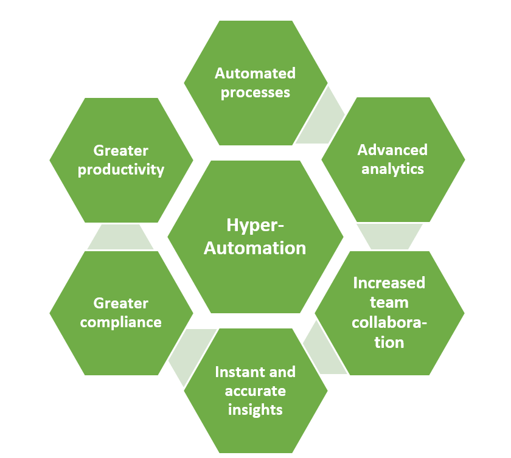

Research
Hyperautomation

Hyperautomation is the application of advanced technologies like AI and machine learning (ML) to augment workers and automate processes in ways that are significantly more impactful that traditional automation capabilities.
As no single tool can replace humans, hyperautomation involves using multiple tools in symphony, including robotic process automation (RPA), intelligent business management software (iBPMS) and AI, with the goal of increasingly AI-driven decision making. It’s the next step beyond RPA, further replacing human involvement in physical and digital tasks, and eventually the complete decision-making process.
As a side note: although not the main goal, hyperautomation often results in the creation of a digital twin of an organisation (DTO), allowing them to visualize how functions, processes and key performance indicators interact to drive value. The DTO then becomes an integral part of the hyperautomation process, providing real-time, continuous intelligence about the organization and driving significant business opportunities.
Link to Hyperautomation
Multiexperience
multiexperience is about adapting to the increasing market of different devices and their respective experiences. Applications now need to run on different platforms and adapt easily, all while providing a consistent experience from a business perspective.
Why is this relevant? For one, it’s because a few companies are already doing it and, for another, it’s because the average individual currently owns 3.2 different devices. In other words, it’s becoming the increasingly expected norm.
Link to Multiexperience
Distributed Cloud
Cloud providers use the distributed model to enable lower latency and provide better performance for cloud services. Beyond the cloud provider context, two other examples of distributed cloud are public resource computing and the volunteer cloud. Public resource computing is a cross between cloud computing and distributed computing that involves computers in geographically dispersed locations connected to collaborate on compute-intensive and/or computer-intensive tasks.
In a volunteer cloud, the resources of member computers are connected through a single service or hub to collaboratively construct and configure cloud infrastructure.
Link to Distributed Cloud